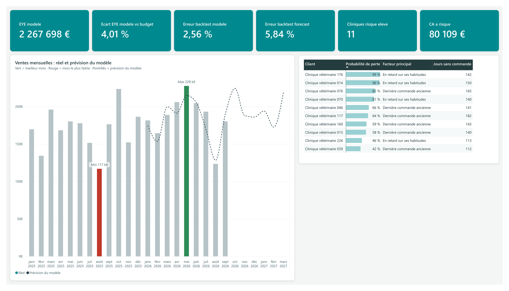

Gross Sales
Le chiffre d'affaires au prix tarif, calculé ligne par ligne. Presque tout le reste en dépend.
SUMX ( SellIn, SellIn[Quantite] * SellIn[Prix_Tarif_Unitaire] )Ce portfolio se consulte à l'horizontale, pour bien voir les tableaux de bord.
Démo prédiction · Power BI et Python
Un rapport de ventes vétérinaires, sur des données fictives, qui estime où l'année va atterrir et repère les cliniques sur le point de partir. Les deux modèles derrière sont écrits en Python et tournent directement dans Power BI.
Un rapport de ventes classique raconte ce qui s'est passé. Je voulais voir s'il pouvait aussi annoncer la suite, avec une marge d'erreur connue plutôt qu'un chiffre jeté en l'air.
Il répond à deux questions qu'on entend souvent dans une équipe commerciale. La direction veut savoir si l'année finira au-dessus ou en dessous du budget. Les délégués, eux, veulent savoir quelles cliniques décrochent, et laquelle appeler en premier.
Les produits, les cliniques et les montants sont tous inventés. Le jeu de données a quand même été pensé pour ressembler à un vrai suivi des ventes. On y retrouve le pic des antiparasitaires au printemps, le creux d'août, une croissance d'environ 5 % par an, et des cliniques qui commandent de moins en moins avant d'arrêter.
| Table | Ce qu'elle contient |
|---|---|
| Ventes | 35 659 lignes de commande entre janvier 2023 et le 16 octobre 2026, avec la date, la clinique, le produit, la quantité et le prix |
| Budget | L'objectif mensuel de chaque produit, fixé en début d'année, pour 2025 et 2026 |
| Forecast | Le budget 2026 revu en cours d'année |
| Produits | 12 produits, avec leur gamme et l'espèce concernée |
| Cliniques | 260 cliniques, avec leur région et leur délégué |
| Délégués | 8 délégués, un par région |
Ces tables forment un modèle en étoile. Les ventes, le budget et le forecast sont au centre, les produits, les cliniques et les délégués autour, avec une table Calendrier écrite en DAX. Les deux scripts Python récupèrent la table des ventes dans Power Query et renvoient leurs résultats sous forme de tables du modèle, reliées comme les autres.
Cliquez sur un numéro pour lire l'explication qui va avec.

Rapport Power BI exporté en PDF. Données fictives.
C'est le chiffre que la direction regarde en premier. Il additionne les ventes déjà réalisées en 2026 et ce que le modèle prévoit d'ici décembre, soit 2 267 698 €, 4 % au-dessus du budget.
Sur les neuf premiers mois de 2026, le modèle s'est trompé de 2,56 % sur le total, le forecast de 5,84 %. Le forecast étant lui aussi inventé, la comparaison est à prendre avec des pincettes.
11 cliniques ont plus de 40 % de chances d'arrêter de commander. Ensemble, elles ont représenté 80 109 € sur les douze derniers mois.
La courbe teal suit les ventes réelles, la verte le modèle. La bande claire autour du modèle donne sa marge d'erreur, et plus elle s'élargit, moins il est sûr de lui.
C'est la partie qui sert aux délégués. Les cliniques y sont classées de la plus à risque à la moins à risque, avec la raison principale et le nombre de jours depuis la dernière commande.
Elles sont rangées dans une table _Mesures. Voici celles qui font tourner la page.
Le chiffre d'affaires au prix tarif, calculé ligne par ligne. Presque tout le reste en dépend.
SUMX ( SellIn, SellIn[Quantite] * SellIn[Prix_Tarif_Unitaire] )La date qui sépare le réel de la prévision. Un mois commencé mais pas terminé n'est jamais compté comme du réel.
EOMONTH ( CALCULATE ( MAX ( SellIn[Date] ), ALL ( SellIn ) ), -1 )L'atterrissage de fin d'année. Il ajoute au cumul réel de janvier au dernier mois complet (CF annee) la prévision du modèle jusqu'à décembre.
[CF annee] + [Prevision fin annee]L'écart entre cet atterrissage et le budget de l'année, en pourcentage.
DIVIDE ( [EYE modele] - [Budget annee], [Budget annee] )Ce que le modèle avait prévu pour janvier–septembre 2026, comparé à ce qui s'est vraiment vendu. La même mesure existe pour le forecast.
VAR fin = [Dernier mois complet]
VAR reel = CALCULATE ( [Gross Sales], REMOVEFILTERS ( Calendrier ),
DATESBETWEEN ( Calendrier[Date], DATE ( YEAR ( fin ), 1, 1 ), fin ) )
VAR prev = CALCULATE ( SUM ( prevision_produit[Prevision] ),
prevision_produit[Type] = "Backtest", REMOVEFILTERS ( Calendrier ) )
RETURN DIVIDE ( ABS ( prev - reel ), reel )Coupe la courbe des ventes au dernier mois complet. Sans elle, octobre, à moitié écoulé, ressemblerait à une chute.
IF ( MAX ( Calendrier[Date] ) <= [Dernier mois complet], [Gross Sales] )Le nombre de cliniques que le modèle classe en risque élevé, au-delà de 40 % de probabilité de perte.
CALCULATE ( COUNTROWS ( score_clients ), score_clients[Niveau_risque] = "Élevé" )Ce que ces cliniques ont acheté sur douze mois, autrement dit la perte possible en euros.
CALCULATE ( SUM ( score_clients[CA_12_mois] ), score_clients[Niveau_risque] = "Élevé" )Avant de faire confiance à un modèle, j'ai mesuré son erreur sur une période qu'il n'avait jamais vue.
Un modèle par produit, avec une tendance pour la croissance et un effet par mois pour la saison. Il a appris sur 2023–2025, puis prévu janvier–septembre 2026, que je connaissais déjà.
| Sur janvier–septembre 2026 | Modèle | Forecast |
|---|---|---|
| Erreur moyenne par mois | 5,6 % | 10,3 % |
| Erreur sur le total des 9 mois | 2,6 % | 5,8 % |
| Mois réels dans la marge à 80 % | 8 sur 9 | – |
Une régression logistique donne à chaque clinique une probabilité d'arrêter de commander dans les six mois. Elle apprend sur des « photos » mensuelles du passé, qui associent ce qu'on savait de chaque clinique à une date donnée et ce qui s'est passé ensuite.
| Sur la période de test | Valeur |
|---|---|
| AUC | 0,91 |
| Part de cliniques réellement perdues | 2,8 % |
| Part de vraies pertes parmi les 10 % les mieux scorées | 21 % |